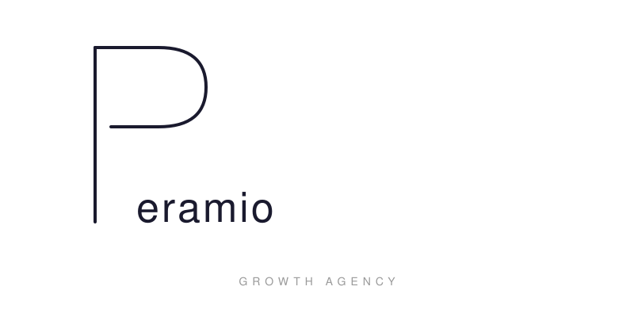
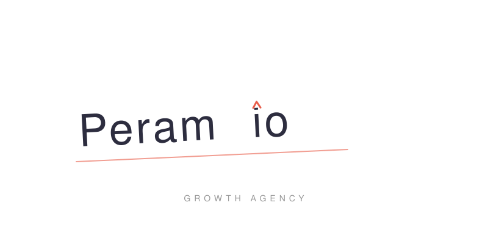
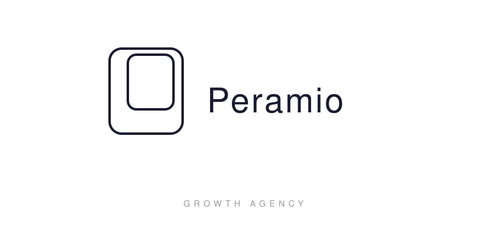
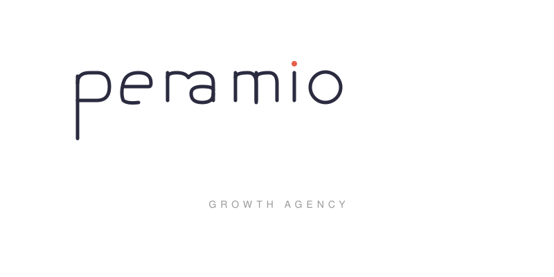
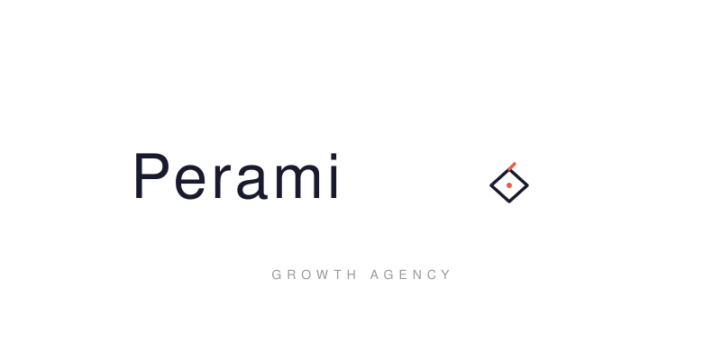

Logo Konseptleri — Adım 2

Büyük P harfi ince, kesintisiz tek çizgiyle çizilmiş. Üst kıvrım tam kapanmaz — "büyümeye açık kapı" metaforu. P'nin devamında aynı nefeste "eramio" yazısı akar.
Harf + Wordmark
Beyoğlu'nun yokuşlarından ilham alan yükselen baseline. "i" noktası yukarı yönlü bir chevron'a dönüşür — growth'u söylemeden gösteren akıllı bir detay.
Wordmark
Dönüşüm kapısı: iç içe iki yuvarlatılmış dikdörtgen. İç form hafifçe kaymış — hareket hissi. Negatif alanda gizli bir P okuması. Pera'nın geçiş noktası ruhu.
Sembol + Wordmark
Tamamen küçük harfle, custom çizilmiş letterform. r-a ligature'ü organik bir bağ kurar, m'nin orta bacağı büyüme iması taşır. i noktası accent rengiyle vurgulanır.
Custom Wordmark
"o" harfi yerine geometrik pusula diamond formu. Sağ üst köşe hafifçe sivrilmiş — yön ve ilerleme. Müşteriye rehberlik vaadini minimal bir müdahaleyle anlatır.
Sembol + Wordmark